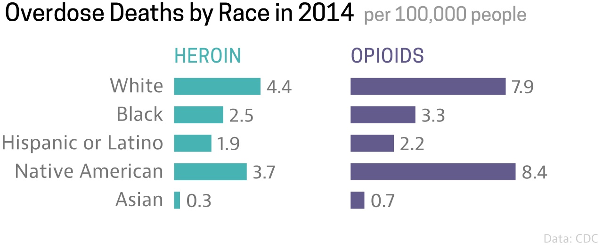
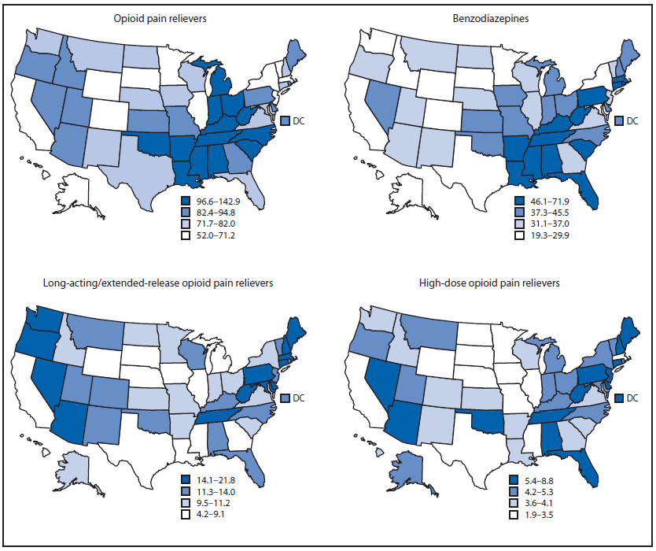

USA OPIOID EPIDEMIC
Overview
Unlike other drug epidemics, the opioid crisis arose from the over-prescription medication once thought to be a cure-all for pain. Eventually, authorities began taking measures to restrict opioid prescriptions, but they were not equipped with enough resources to treat a large population that was already addicted. As a result, demand for street heroin and fentanyl skyrocketed.
Today, the USA is losing around 1,000 people per week to overall drug overdoses. About two-thirds of these overdoses are opioid fatalities. This equates to losing about 91 people a day due to opioid use.
Who's Affected?

Whites, Blacks, Hispanic or Latinos, Native Americans, and Asians have all seen a rise in overdoses. However, whites and native Americans have experienced the largest rise in opioid-deaths than any other group, especially among 45-54 year olds.
.png)
Problem Areas

Regionally, central Appalachia, was hit hard and early in the opioid crisis. This area is known for industries that are physically taxing (coalmining, agriculture, and lumber production), and many folks were prescribed opioids to curb the pain and stress that come from such laborious jobs. To this day, some states in central Appalachia and New England have the highest opioid overdose rates per capita in the USA.
Maryland
Opioids now kill more Americans than car crashes, and more than breast cancer. Brooke Simmers was one of the 1,089 Marylanders who died of an opioid overdose in 2015 and among the more than 33,000 nationally, according to the CDC. In 2016, opioid-related deaths in the state rose 70 percent to 1,856, and in 2017 the number of drug- and alcohol-related intoxication deaths reached an all-time high of 2,282. Part of this troubling trend is the increased appearance in Maryland of fentanyl, a synthetic opioid that’s up to 50 times more potent than heroin—as little as the equivalent of a few grains of table salt can be a lethal dose. During this same two-year period, fentanyl deaths more than tripled in the state.
For more information, click here.
Washington D.C.
Washington, D.C. has one of the highest rates in the United States. In 2016, there were 209 opioid-related overdose deaths in Washington, D.C.—a rate of 30 deaths per 100,000 persons and more than the national rate of 13.3 deaths per 100,000 persons. Deaths related to synthetic opioids have been reported since 2013 and increased in the past three years from 13 to 129 deaths. Since 2010, the number of heroin-related deaths increased from 16 to 67 deaths and deaths related to Rx opioids rose from 13 to 66 deaths.
Ohio
In Ohio, the leading cause of drug-related deaths have been caused by opioids since 2010. Prescription opioid painkillers and heroin are the most common forms of opioids in overdose cases. Since 2003, 17,000 Ohio residents have died by overdose.
New Hampshire
New Hampshire ranks as one of the highest in the country for illegal drug use. Ninety-one percent of overdose deaths are opioid related. Fentanyl has been a factor in a majority of the opioid deaths.

West Virginia
In 2016, West Virginia had the highest rate of opioid-related overdose deaths in the United States―a rate of 43.4 deaths per 100,000―and up from a low 1.8 deaths per 100,000 in 1999. The number of overdose deaths peaked at 733 deaths in 2016 with the majority of deaths attributed to synthetic opioids and heroin. Since 2010, deaths related to synthetic opioid deaths quadrupled from 102 to 435 deaths and deaths related to heroin rose from 28 to 235 deaths..
Check out this link for more information.
5 Events Contributing To The Opioid Epidemic
- Prescription pain pills: Chemists in the last century learned to synthesize opioid analogues to produce powerful new painkillers. During the 1990s, treating pain became a priority for medical providers and drug makers produced and marketed a number of prescription opioids.
- Painkiller overdoses rise: Overdoses and deaths due to misuse of prescription painkillers started to climb through the 2000s which by 2011 brought changes in policy and laws which punished doctors writing too many prescriptions and cut some people off from painkillers.
- Heroin fills void: Though heroin was available and used recreational drug, the street drug once contained to larger urban areas made its way everywhere to fill the void for those already addicted who could no longer get or afford pain pills.
- Volume up, price down: The rising market brought the cost of heroin down and created a number of new users in addition to those hooked originally on pain pills.
- Production shifts: By 2012, most heroin coming to the U.S. is coming through Mexico under cartel control. Just five years later, as much if not more of the product sold on the street as heroin is fentanyl, up to 50 times more powerful.
What We Can Do
There is not one simple solution to the opiod epidemic. The people it affects ranges across demographics and socio-economic status. In Appalachia, it predominately afflicts the poor white population while in New Mexico, it overwhelmingly hits the rural Hispanic population. Yet in Maryland and D.C., it affects more urban middle class. Therefore, it is not just a rural versus urban, or a poor versus rich problem, but an overall American problem. It is also an issue of availability, and of a culture all too willing to accept prescriptions that ease the symptoms without addressing the underlying causes. Despite the foreboding recent history of opiods in America, there are some reasons to have hope.
Virginia has had some measurable success implementing some policies on a state level. In 2016, Virginia’s overdose rate was roughly half of that of Tennessee and Kentucky, a third of Maryland’s, and a whopping quarter the rate of West Virginia. A major difference between Virginia and the other states was its investment in addiction treatment reimbursements through Medicaid. The program Virginia has implemented is called ARTS, or Addiction and Recovery Treatment Services. Since its implementation, Virginia has a seen an 8% decrease in emergency room visits of patients enrolled in the program.
Another state that has seen moderate success dealing with the opiod crisis is Vermont. Vermont and New Hampshire have almost identical demographics, yet New Hampshire has almost 3 times the overdose rate as Vermont. Vermont implements a holistic model called "The Hub" and "Spoke", which considers many factors such as access to addiction medicines, pain management clinics, family services, inpatient services, and substance abuse outpatient facilities. Another major influence on reduction is likely the accountability of doctors and pharmacists that states such as Vermont have implemented.
While Virginia and Vermont have not solved the opiod crisis by any means, there have been many measurable successes that are likely attributed to policy, doctor accountability, and a holistic approach at dealing and preventing addiction. Other states can look at these successes, and implement them on a local level in hopes that the federal government will follow suit to curb this unprecedented crisis.